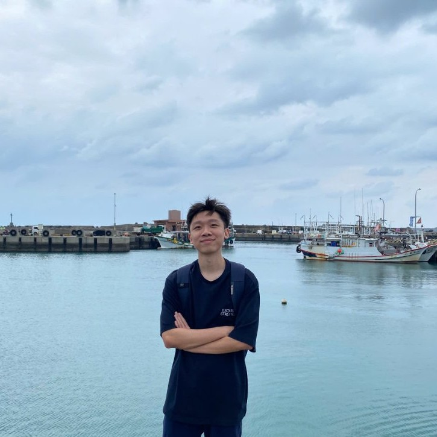

Nguyen Gia Hung
AI Engineer — Medical AI Researcher

Information Technology alumnus from VNUHCM – University of Science with a strong passion for building impactful medical applications. I'm a self-driven learner continuously improving my skills in mathematics, English, and programming, believing in consistent effort and curiosity as the keys to growth. This space is where I document my learning journey, share study notes, and build meaningful software that makes a difference.